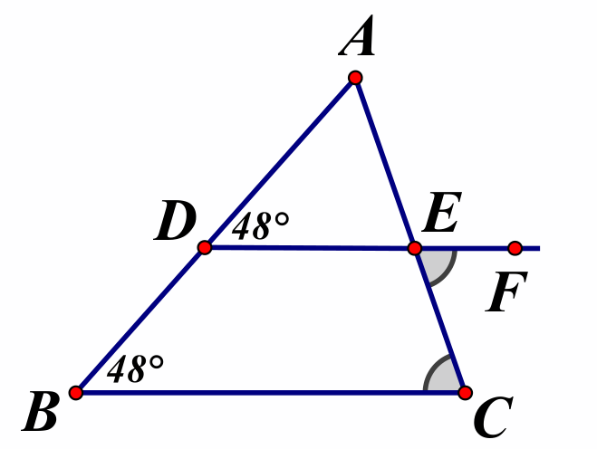
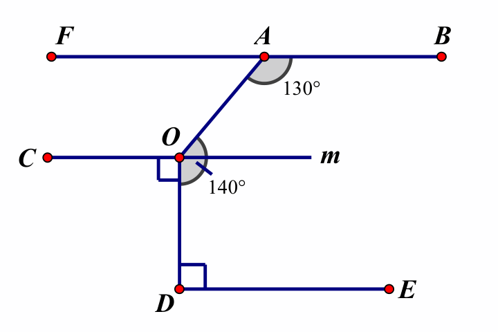
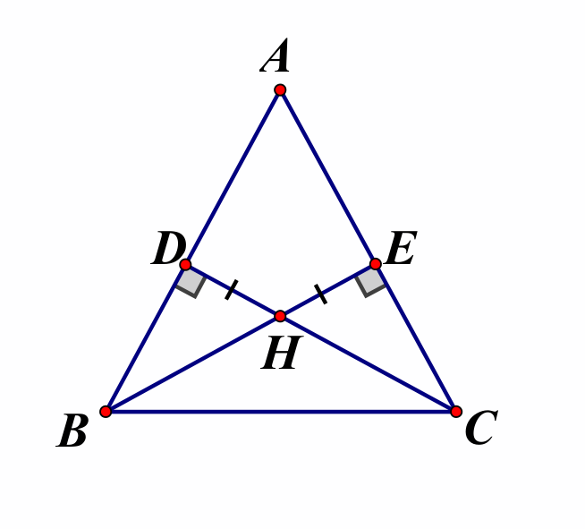
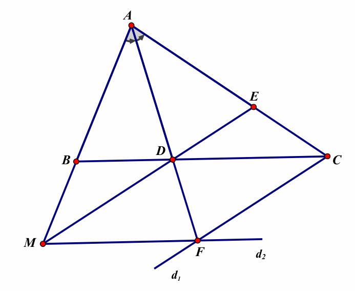

26 tháng 7 - Họp giáo viên khối 7
Năm học: 2026 – 2027
Năm học: 2026 – 2027
Chi tiết phân phối chương trình, nội dung giảng dạy dự kiến theo từng tuần cho các phân khúc lớp.
Kế hoạch triển khai, tổ chức lớp bổ trợ nhằm củng cố và lấp lỗ hổng kiến thức cho học sinh.
Phân tích các dạng toán trọng tâm, cách nhận xét chi tiết và lưu ý lỗi sai phổ biến của học sinh.
| Tháng | Buổi học | Định hướng chuyên |
Nâng cao |
Cơ bản và Mở rộng |
|---|---|---|---|---|
| Tháng 7 năm 2026 |
5 (27/7 - 02/8) |
Góc ở vị trí đặc biệt - Tia phân giác của một góc | Góc ở vị trí đặc biệt - Các góc tạo bởi một đường thẳng cắt hai đường thẳng | Hai đường thẳng song song và dấu hiệu nhận biết |
| Tháng 8 năm 2026 |
6 (03/8 - 09/8) |
Hai đường thẳng song song | Hai đường thẳng song song | Ôn tập và kiểm tra tháng 7 |
| 7 (10/8 - 16/08) |
Ôn tập và kiểm tra tháng | Ôn tập và kiểm tra tháng | Tiên đề Euclid. Tính chất hai đường thẳng song song (đưa thêm định lý) | |
| 8 (17/8 - 23/8) |
Tổng ba góc trong một tam giác | Luyện tập hai đường thẳng song song | Ôn tập hình học | |
| Tháng 9 năm 2026 |
10 (Lễ Quốc khánh) |
Ôn tập tổng hợp | Ôn tập tổng hợp | Ôn tập tổng hợp |
| 11 (07/9 - 13/9) |
GTNN, GTLN của biểu thức chứa dấu GTTĐ | Ôn tập số vô tỉ, số thực | Giá trị tuyệt đối của một số thực | |
| 12 (14/9 - 20/9) |
Trường hợp bằng nhau thứ nhất và thứ hai của tam giác | Trường hợp bằng nhau thứ nhất và thứ hai của tam giác | Tổng ba góc trong một tam giác - Hai tam giác bằng nhau | |
| 13 (21/9 - 27/9) |
Trường hợp bằng nhau thứ hai và thứ ba của tam giác | Trường hợp bằng nhau thứ hai và thứ ba của tam giác | Trường hợp bằng nhau thứ nhất và thứ hai của tam giác |
Hỗ trợ riêng biệt nhằm giúp học sinh mới vào sau nhanh chóng làm quen và bắt kịp tiến độ chương trình học hiện tại.
Học sinh mới vào sau.
Củng cố các mảng kiến thức chưa vững cho học sinh còn yếu, đồng thời hỗ trợ dạy học bù cho học sinh nghỉ học.
Học sinh nghỉ học có phép và học sinh còn đuối ở mỗi lớp.
Lưu ý cho học sinh:
Giáo viên định hướng cách giải “kẻ thêm đường phụ”, giải thích tại sao lại kẻ thêm tia Om (để chia góc thành các góc nhỏ liên quan đến các đường song song khác). Nhấn mạnh tính chất bắc cầu: $a \parallel b$ và $b \parallel c$ thì $a \parallel c$.
Cho hình bên.
a) Chứng minh \( DE \parallel BC \)
b) Chứng minh \( EF \parallel BC \)
c) Chứng minh ba điểm \( D, E, F \) thẳng hàng.

a) Ta có: \( \widehat{ADE} = \widehat{ABC} = 48^\circ \)
Mà hai góc này ở vị trí đồng vị nên suy ra \( DE \parallel BC \) (dhnb)
b) Ta có: \( \widehat{FEC} = \widehat{ECB} = 48^\circ \) (kí hiệu giống nhau trên hình)
Mà hai góc này ở vị trí so le trong nên suy ra \( EF \parallel BC \) (dhnb)
c) Ta có:
\( DE \parallel BC \)
\( EF \parallel BC \)
\(\Rightarrow D, E, F\) thẳng hàng (Theo tiên đề Euclid)
Cho hình vẽ. Chứng minh rằng:
a) \( CO \parallel DE \)
b) \( BF \parallel OC \)

a) Vì \( \widehat{COD} = \widehat{ODE} = 90^\circ \)
Mà hai góc ở vị trí so le trong suy ra \( CO \parallel DE \)
b) Kẻ Om là tia đối của tia OC.
Vì \( \widehat{COD} + \widehat{mOD} = 180^\circ \) (2 góc kề bù)
Suy ra \( 90^\circ + \widehat{mOD} = 180^\circ \Rightarrow \widehat{mOD} = 90^\circ \)
Ta có: \( \widehat{AOm} + \widehat{mOD} = 140^\circ \Rightarrow \widehat{AOm} = 140^\circ - 90^\circ = 50^\circ \)
Lại có \( \widehat{AOC} + \widehat{AOm} = 180^\circ \) (kề bù) \(\Rightarrow \widehat{AOC} = 180^\circ - 50^\circ = 130^\circ \)
\(\Rightarrow \widehat{AOC} = \widehat{BAO} = 130^\circ \) và 2 góc ở vị trí so le trong nên \( BF \parallel OC \).
Cho hình bên.
a) Chứng minh \( \Delta HDB = \Delta HEC \)
b) Chứng minh \( \widehat{DBH} = \widehat{ECH} \)

a) Xét \( \Delta HDB \) và \( \Delta HEC \) có:
\( \widehat{HDB} = \widehat{HEC} = 90^\circ \)
\( HD = HE \)
\( \widehat{BHD} = \widehat{CHE} \) (2 góc đối đỉnh)
Vậy \( \Delta HDB = \Delta HEC \) (g.c.g) (đpcm)
b) Vì \( \Delta HDB = \Delta HEC \) (cmt)
Nên \( \widehat{DBH} = \widehat{ECH} \) (2 góc tương ứng) (đpcm).
Cho \(\Delta ABC\) (\(AB < AC\)). Tia phân giác góc \(BAC\) cắt \(BC\) tại \(D\).
Trên cạnh \(AC\) lấy điểm \(E\) sao cho \(AE = AB\).
Tia \(AB\) và \(ED\) cắt nhau tại \(M\).
a) CMR \(\Delta ABD = \Delta AED\)
b) CMR \(\Delta BDM = \Delta EDC\)
c) Gọi \(d_1\) là đường thẳng đi qua \(C\) và song song với \(ED\),
\(d_2\) là đường thẳng qua \(M\) song song với \(BC\). \(d_1, d_2\) cắt nhau tại \(F\).
CMR 3 điểm \(A, D, F\) thẳng hàng.

Lỗi sai câu c (HS ngộ nhận):
Chứng minh: \(\widehat{ADM} = \widehat{ADC}\) rồi suy ra \(\widehat{MDF} = \widehat{CDF}\)
(kề bù với \(\widehat{ADM}\) và \(\widehat{ADC}\))
Suy ra \(\Delta MDF = \Delta CDF\) (c-g-c) nên \(MF = CF\), chứng minh được \(AM = AC\) từ đó
chứng minh \(\Delta AMF = \Delta ACF\) (c-g-c) nên \(AF\) là phân giác \(\widehat{MAC}\) mà \(AD\)
là tia phân giác \(\widehat{MAC}\) suy ra \(A, D, F\) thẳng hàng.
Lời giải đúng:
Chứng minh \(\Delta DFM = \Delta FDC\) (g-c-g) nên từ đó chứng minh được \(MF = FC\) \((= DC = MD)\) sau đó chứng minh \(\Delta AMF = \Delta ACF\) (c-g-c) nên \(AF\) là tia phân giác \(\widehat{MAC}\) mà \(AD\) là tia phân giác \(\widehat{MAC}\) suy ra \(A, D, F\) thẳng hàng.


- Từ tuần thứ 6, 7 các lớp sẽ tổ chức bài kiểm tra định kỳ tháng theo kế hoạch.
- Trong tuần thứ 9, các lớp sẽ tổ chức bài kiểm tra khảo sát định kỳ nhằm đánh giá mức độ tiếp thu kiến thức, kỹ năng và sự tiến bộ của học sinh sau giai đoạn học tập đầu tiên.
| Dạng bài | Nội dung nhận xét |
|---|---|
|
Con vận dụng tốt: Các dạng bài toán tính hợp lí; quy tắc phá dấu giá trị tuyệt đối và các phép toán cộng, trừ, nhân, chia số hữu tỉ để tìm x. Giải bài toán có lời văn (sử dụng tính chất của dãy tỉ số bằng nhau). Phần hình học con vận dụng tốt kiến thức vào làm các dạng bài sử dụng tính chất của hai đường thẳng song song và các góc ở vị trí đặc biệt để tính số đo góc; chứng minh hai tam giác bằng nhau để chỉ ra các cạnh, các góc tương ứng bằng nhau; chứng minh hai đường thẳng vuông góc. Con cần ôn tập thêm: Các dạng bài nâng cao sử dụng tính chất tỉ lệ thức và tính chất chia hết trong tập hợp số nguyên. |
Bộ phận Chuyên môn luôn sẵn sàng lắng nghe những chia sẻ và đóng góp từ các Thầy Cô để công tác giảng dạy ngày càng hoàn thiện hơn.
Chúc các thầy cô một năm học mới làm việc hiệu quả và tràn đầy năng lượng.